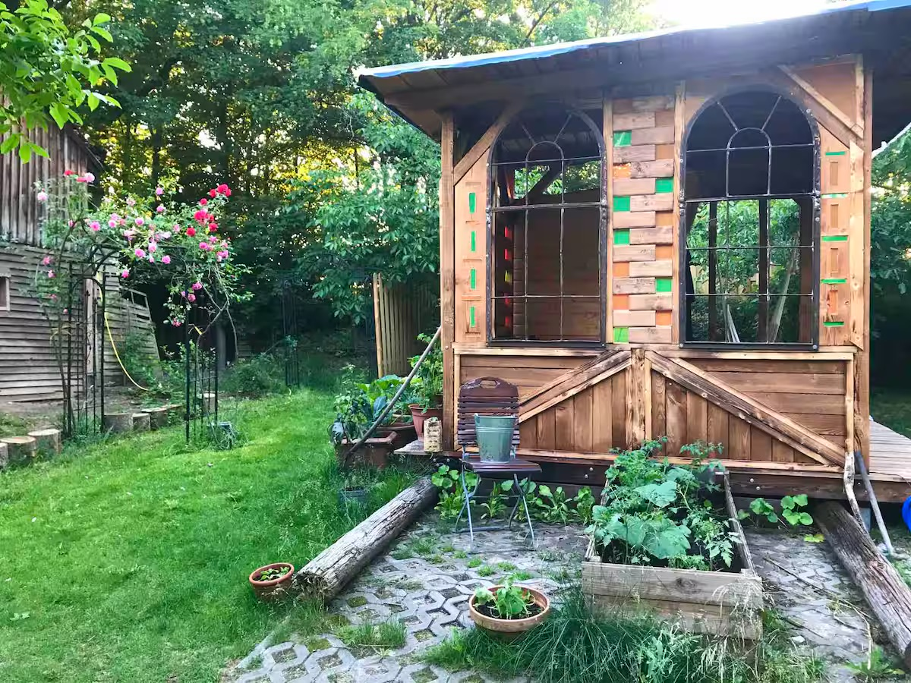
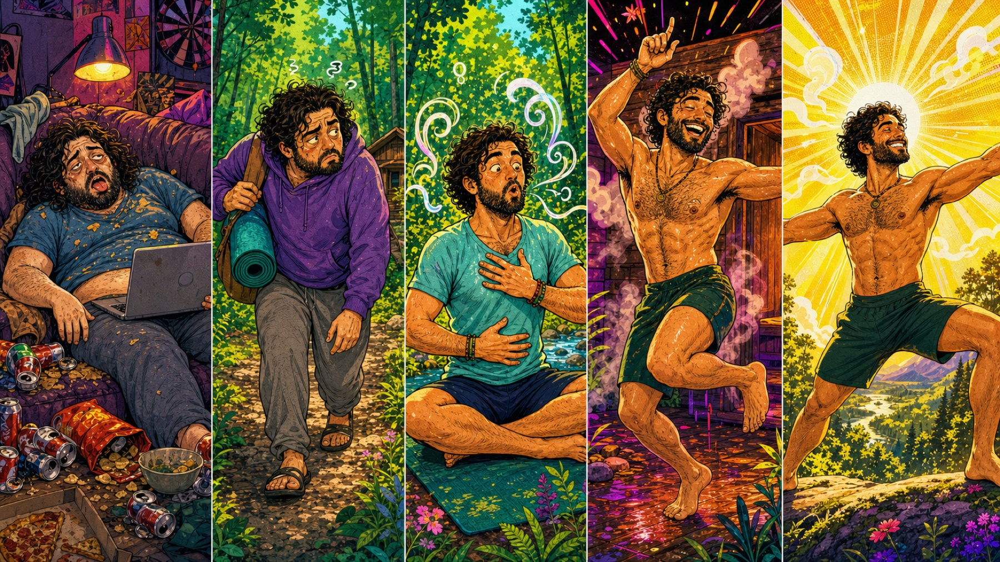
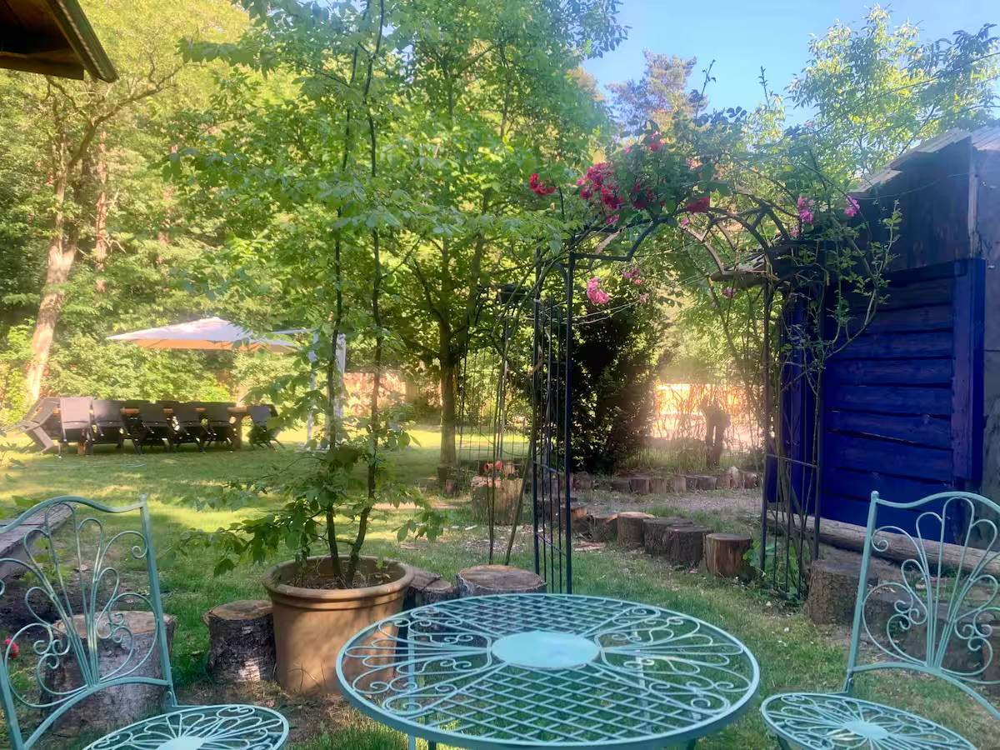
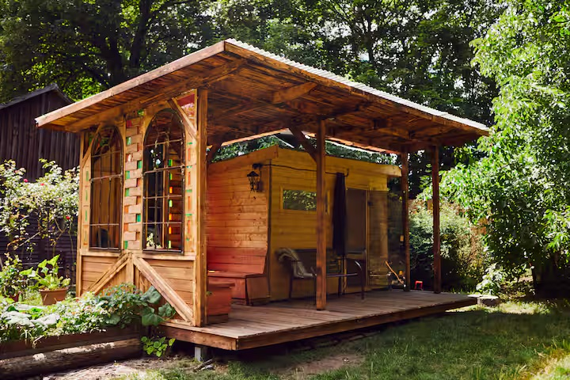
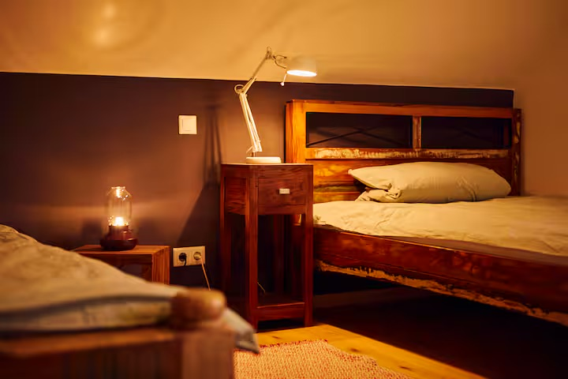
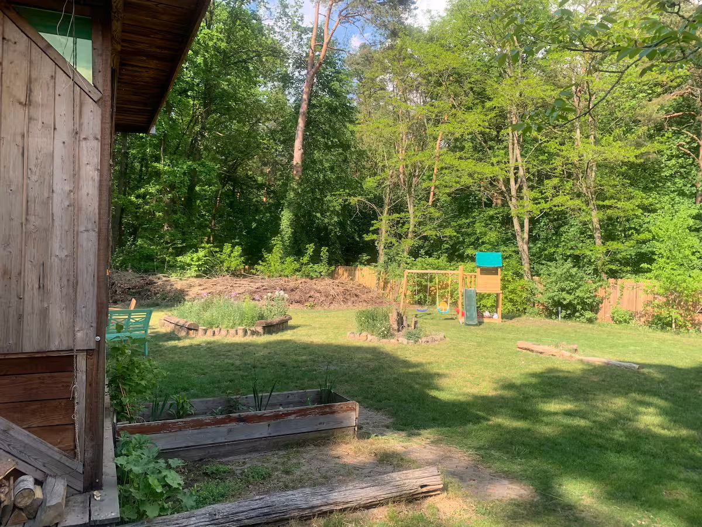

Breathwork
Atmen können wir schon. Jetzt machen wir es absichtlich.
2027 · Haus am Wald · nahe Berlin
Ein mehrtägiger Reset unter Freund*innen. Fasten, bewegen, atmen, tanzen, schwitzen — und schauen, was übrig bleibt, wenn wir mal nichts drauflegen.

Wenn alle Akkus rot blinken, machen wir keinen weiteren Rave — sondern Frühjahrsputz fürs System. Gemeinsam fasten. Intentional leben. Wieder spüren, was eigentlich wichtig ist.
Fastival ist kein Business-Retreat und kein steriles Wellnessprogramm. Es ist ein liebevoll gebautes Experiment für Freund*innen: ruhig in der Basis, wild an den Rändern, tief genug für echte Fragen und albern genug, dass niemand „Transformation Journey“ sagen muss.
Kein Selbstoptimierungs-Bootcamp. Eher ein sorgfältig kuratierter Spielplatz für Körper, Kopf und kollektiven Kontrollverlust — ganz ohne Substanzen.
Atmen können wir schon. Jetzt machen wir es absichtlich.
Zwischen Erdung, Dehnung und „welcher Muskel ist das?“
Burn your calories & stress. Burner, nur anders.
Raven mit körpereigener Chemie. Tanzen ausdrücklich erwünscht.
Raus aus dem Kopf, rein in das erstaunlich gute Tragegestell.
Was will durch dich passieren, wenn der Lärm mal Pause hat?
Supplements, Longevity, Sexiness — relevant, undogmatisch, mit Fragen.
Wer alles vorher verrät, hat Musterunterbrechung nicht verstanden.
Fünf Phasen. Derselbe Typ. Eine zunehmend stabile Aura und verdächtig gute Bauchmuskeln.

Jeder Körper fastet anders. Diese Timeline ist Stimmung, kein medizinischer Fahrplan — und definitiv kein Leistungsranking.
Wir landen im Haus, beziehen unsere Zimmer und lassen Berlin samt Dauerrauschen langsam hinter uns. Beim gemeinsamen Check-in setzen wir unsere persönliche Intention und klären den Fastenrahmen.
Die letzte Mahlzeit winkt dramatisch zum Abschied.
Der Körper stellt um, deshalb bleibt das Tempo freundlich. Yoga, Spaziergänge und Atemübungen bringen uns aus dem Kopf zurück in den Körper — mit genug Raum für Pause und Rückzug.
Der Alltag wird leiser. Der imaginäre Kühlschrank kurz sehr laut.
Weniger Input, mehr Innenleben. Breathwork, Bodywork und Sauna laden dazu ein, Spannung loszulassen und wahrzunehmen, was sonst zuverlässig weggesnackt oder weggescrollt wird.
Plot Twist: Unter dem Hunger wohnt eventuell ein Gefühl.
Wenn der äußere Lärm weniger wird, darf die innere Richtung deutlicher werden. Wir verbinden neue Klarheit mit Wissen, Bewegung und einer Portion gepflegter Verspultheit.
Die Aura bestellt vorsorglich schon mal XL.
Wir kommen sanft zurück, brechen das Fasten bewusst und übersetzen die Erkenntnisse in etwas, das auch am Montag noch existiert. Kein Selbstoptimierungsfeuerwerk — lieber ein guter nächster Schritt.
Stark, weich und verdächtig lichterfüllt.
Kleingedruckt, aber wichtig: Mehrtägiges Fasten ist nicht für alle Menschen geeignet. Vorerkrankungen, Schwangerschaft, Essstörungen oder Medikamente gehören vorab professionell abgeklärt. Vor Ort folgen wir einem gemeinsamen, verantwortungsvollen Rahmen.
Ein ehemaliges Forsthaus im Höhenland, nahe Berlin. Garten, Wald, selbstgebaute Holzofensauna und Wintergarten — ziemlich gute Bedingungen, um das Betriebssystem neu zu starten.





Domenico und Robin haben sich über den Fasten Tribe kennengelernt. Aus gemeinsamen Erfahrungen, vielen Gesprächen und einer vermutlich leicht überambitionierten Idee wurde dieses Event.
Wir bauen das Fastival nicht für Kund*innen. Wir bauen es für unsere Freund*innen — und für Menschen, mit denen man nach vier Tagen Fasten noch gerne in einer Sauna sitzt.
„Relevant, aber lustig. Tief, aber nicht heilig. Gesund, aber bitte cool.“
Ein fundierter Einstieg von Buchinger Wilhelmi über Fasten und Gesundheit. Nicht unser Video, aber eine gute Vorbereitung.
Fasten-Info ansehen ↗Kleine Gruppe · 15–18 Menschen · 2027
300 € pro Person. Der genaue Termin und die letzten Details folgen. Schreib uns jetzt, wenn du dabei sein willst — wir melden uns persönlich.
Zum Anmeldeformular Kein Checkout. Kein Funnel. Nur ein kurzes Google Form ↗ für echte Menschen.